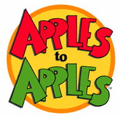
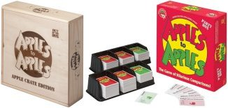

Apples To Apples - Official Rules - Party Set


Setting Up The Game
- 1 - Remove the card tray (one or both, depending on the number of
players) from the box (green apples on the right, red in the left &
center).
- 2 - Use the box as a discard area for already-used red apples.
- 3 - Choose a player to be the first judge.
- 4 - The first judge deals 7 red apples (face down) to each person
(including themself).
- 5 - Once players have all 7 red apples, they may look at
them.
Playing The Game
- 1 - The judge picks a green apple at random, reads it aloud, and places
it (face up) on the table.
- 2 - All players (except the judge) choose one red apple from their hand
(based on the green apple) and plays it face down on the table.
- Quick Pick Option - Each player (except the judge) plays one 1 red
apple. The slowest person doesn't get to play a red apple that
turn.
- 3a - The judge shuffles the face-down red apples so that nobody knows
who played which apple.
- 3b - The judge flips over the red apples one at a time, reading them
aloud as they're revealed to all players.
- 3c - The judge selects his favorite red apple (based on thr green apple)
of those played and awards the green apple to the person who played
it.
- 4 - Players keep all green apples they've been awarded in front of them
on the table as a means of keeping score.
- 5 - The judge collects all of the played red apple cards and discards
them into the box.
- 6a - The tray and the role of judge rotates clockwise (the next person
on the left).
- 6b - Before starting the next round, the new judge should deal out
enough cards to make sure everyone is back to 7 red apples.
Winning The Game
- 1 - Keep score by keeping the green apples you've won.
- 2 - Here's how to tell when the game is over ...
- For 4 players, 8 green apples win.
- For 5 players, 7 green apples win.
- For 6 players, 6 green apples win.
- For 7 players, 5 green apples win.
- For 8+ players, 4 green apples win.